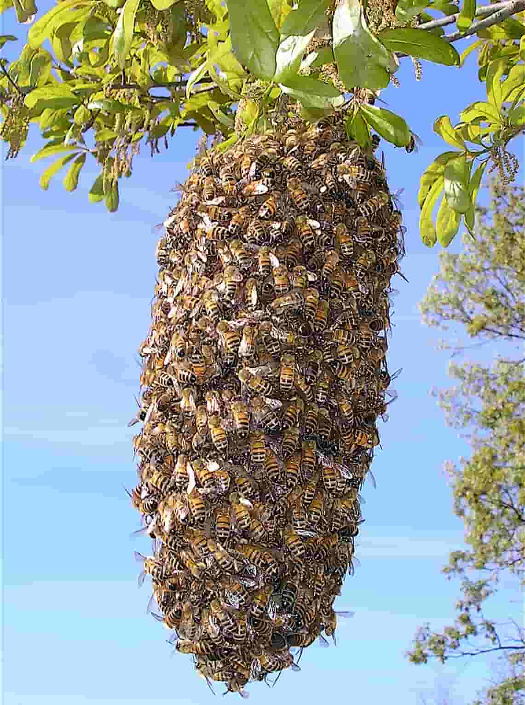

Роение пчел
Роение - это естественный процесс размножения пчёл, когда новая матка покидает улей вместе с частью рабочих пчёл для создания новой пчелиной семьи. Этот процесс является важным аспектом жизненного цикла пчел и позволяет им распространяться и развиваться. Вот более подробное описание процесса роения:

Причины роения:
Роение обычно происходит весной или летом, когда пчелиная семья становится слишком многочисленной для улья или когда наступает сезонное обилие цветения и роста пчелиной популяции. Причины роения могут быть различными, включая:
Недостаток места и ресурсов в улье для размещения новой пчелиной семьи.
Переполнение улья, что может привести к конкуренции за ресурсы и место.
Повышенная активность и продуктивность текущей матки, которая стимулирует пчёл к созданию новой семьи.
Подготовка к рою:
Перед роем пчёлы начинают подготовительные работы, включая:
Строительство роевых клеток: Рабочие пчёлы начинают строить специальные клетки для размещения новых маток и личинок.
Кормление личинок: Для подготовки к рою пчёлы активно кормят личинок, чтобы обеспечить их здоровый рост и развитие.
Выращивание новой матки: В улье выращивается несколько потенциальных маток, одна из которых станет новым лидером пчелиной семьи.
Процесс роения:
Когда условия для роения становятся подходящими, происходит следующее:
Отправление роевого отряда: Старая матка покидает улей вместе с частью рабочих пчёл для создания новой пчелиной семьи. Этот отряд называется роем.
Выбор места для нового улья: Роевой отряд ищет подходящее место для создания нового улья, обычно это место на дереве или другой подходящей поверхности.
Создание новой семьи: После выбора места новая матка начинает откладывать яйца, чтобы создать новое поколение пчёл и начать развитие новой пчелиной семьи.
Послероение:
После роения оставшиеся в улье пчёлы продолжают свою жизнь и работу, выращивая новое поколение пчёл и продолжая обслуживать улей. Новая матка, оставшаяся в улье, обычно продолжает свою работу, чтобы укрепить пчелиную семью и продолжить процесс развития.
Роение - это важный аспект жизненного цикла пчел, который позволяет им распространяться и развиваться. Хотя это естественный процесс, пчеловоды могут контролировать его и управлять им, чтобы обеспечить здоровье и производство мёда в пчелиной пасеке.